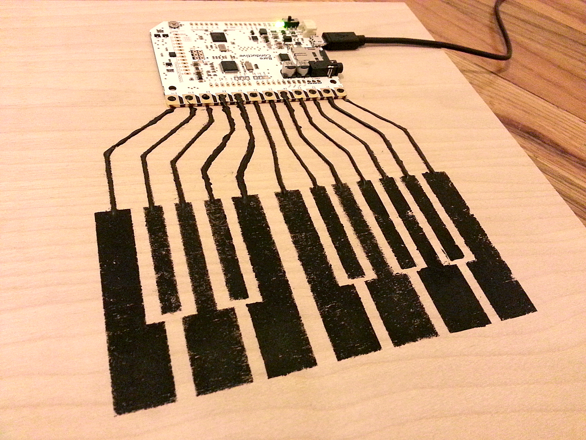

Image Source : bareconductive.com
For Arduino mini project, I decided to make wooden piano keyboard with conductive paint and touchboard. I bought them in online store. On an wooden panel, I stenciled with conductive paint to make a piano keyboard. When conductive paint is dry, it becomes to flow over electricity. Each keyboards are connected to each nodes of touchboard with conductive paint. Code is made in order to connect each node to each musical notes. It can be realized in piano function of garage band in Mac.
